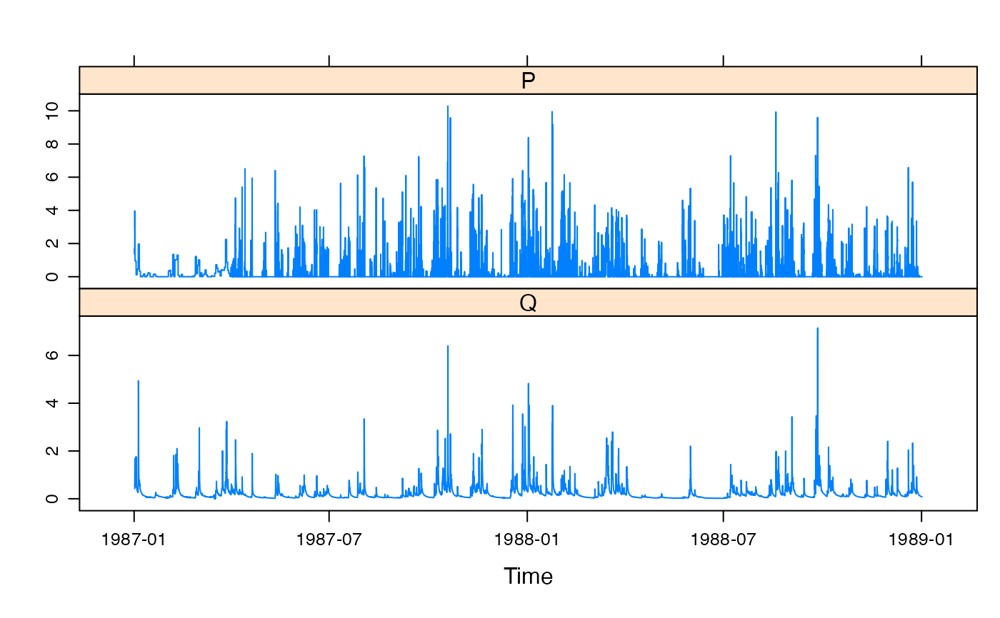
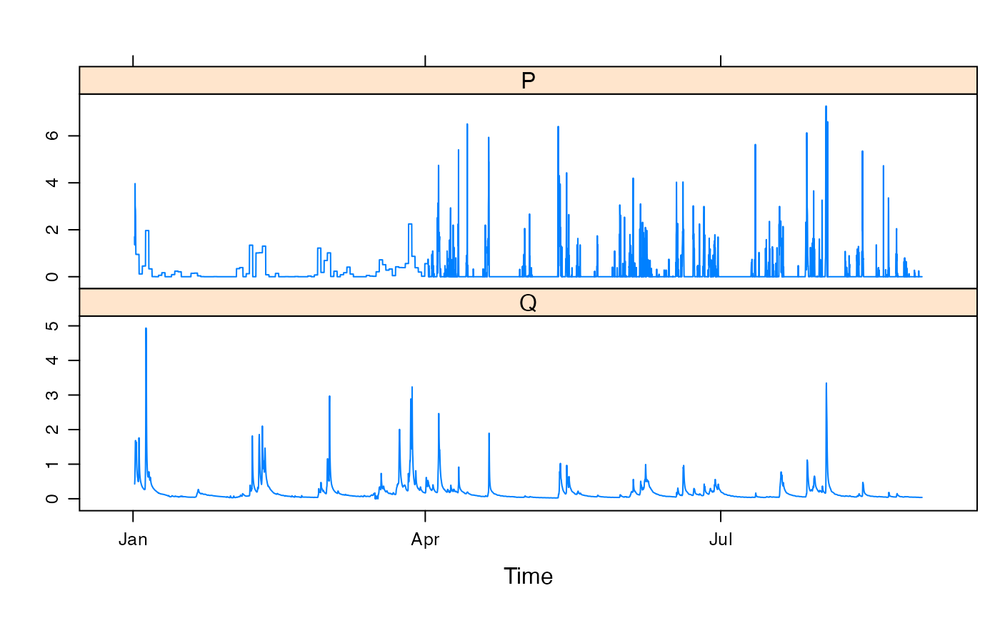
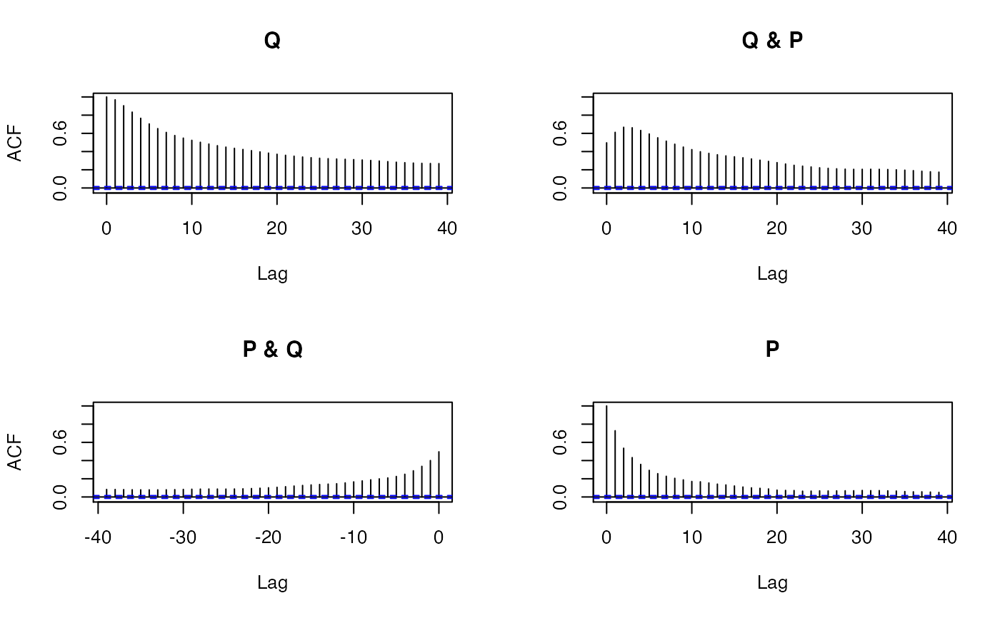

Hourly rainfall and streamflow for Wye at Cefn Brwyn (Wales, UK), from 1987-01-01 12:00 to 1989-01-01 11:00.
WyeA zoo object, of class c("zooreg", "zoo"). It
is a regular time series indexed by hours, in POSIXct format.
There are two columns, P (rainfall, mm / hour) and Q
(streamflow, mm / hour).
Centre for Ecology and Hydrology (CEH), Wallingford, UK, via the Top-Down modelling Working Group (TDWG) for the Prediction in Ungauged Basins (PUB) IAHS Decade (2003-2012):
http://tdwg.catchment.org/datasets.html
Thanks to Ian Littlewood for helping to organise this dataset.
This dataset is described and analysed in the paper cited below. It gives the following introduction:
“The Wye at Cefn Brwyn (the Wye) is a 10.6 km2, predominantly open moorland, headwater catchment in mid-Wales in which land use is predominantly sheep farming. It is one of the wettest gauged basins in England and Wales; mean annual rainfall is about 2490 mm, of which about 87% leaves the catchment as streamflow (NERC, 2003). The catchment is one of the Plynlimon research basins operated by the Centre for Ecology and Hydrology (CEH) (e.g. Robinson and Dupeyrat, 2005). The hydrometric data used in this paper for the Wye comprise 15-min flow data and hourly catchment rainfall data, from which 1-, 2-, 4-, 6-, 12- and 24-hourly rainfall-streamflow data sets were prepared. Streamflow for the Wye is measured at a weir. The rainfall and streamflow data, extracted from the CEH Plynlimon data archive, are considered to be of excellent quality.” (Littlewood and Croke, 2008, p. 687).
Note: first three months of rainfall data appear to be daily averages, not hourly.
Littlewood, I.G. and Croke, B.F.W. (2008). Data time-step dependency of conceptual rainfall-streamflow model parameters: an empirical study with implications for regionalisation. Hydrological Sciences Journal, 53(4), 685-695.
data(Wye)
xyplot(Wye)

## note: first three months of rainfall data are daily averages
xyplot(window(Wye,
start = as.POSIXct("1987-01-01"),
end = as.POSIXct("1987-09-01")
))

## auto- and cross-correlation
acf(coredata(Wye[, 2:1]))
